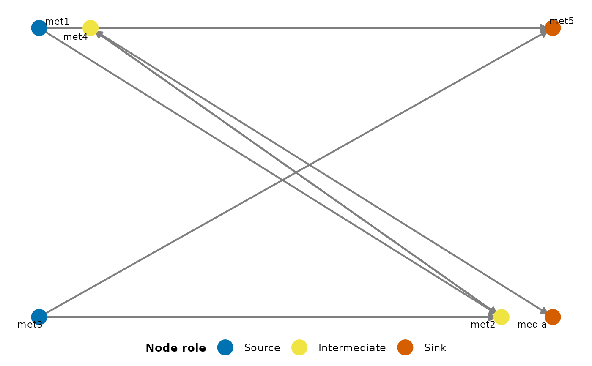

Arranges nodes of a directed graph into three distinct columns representing sources (nodes with only outgoing edges), sinks (nodes with only incoming edges), and intermediate nodes (with both incoming and outgoing edges). The layout within the intermediate column is determined using the Kamada-Kawai algorithm. This visualisation helps understand the overall flow structure within the graph and is rendered with ggraph, so the returned object composes with the usual ggplot2 operators.
Usage
plotDirectedFlow(
g,
sourceX = 0,
mixedX = 1,
sinkX = 2,
verticalSpacing = 1,
nodeSize = 6,
nodeLabelSize = 3,
edgeArrowSize = 2,
edgeWidthRange = c(0.3, 1.2),
colourEdgesByWeight = FALSE,
edgeColourAttr = NULL,
edgeColourValues = NULL,
edgeColourLabels = NULL,
edgeColourLegendTitle = "Type",
edgeColourLow = ramenPalette$edgeWeight[["low"]],
edgeColourHigh = ramenPalette$edgeWeight[["high"]],
nodeColourValues = ramenPalette$nodeRole,
nodeColourLabels = c(source = "Source", intermediate = "Intermediate", sink = "Sink"),
nodeColourLegendTitle = "Node role",
title = NULL,
subtitle = NULL,
main = NULL,
...
)Arguments
- g
An igraph object. Must be a directed graph.
- sourceX
Numeric scalar. The x-coordinate for source nodes. Defaults to 0.
- mixedX
Numeric scalar. The central x-coordinate for intermediate nodes. The actual layout spans
mixedX+/- 0.8. Defaults to 1.- sinkX
Numeric scalar. The x-coordinate for sink nodes. Defaults to 2.
- verticalSpacing
Numeric scalar. The maximum y-coordinate, controlling the vertical spread of the layout. Defaults to 1.
- nodeSize
Numeric scalar. The size of node points in millimetres (ggraph unit). Defaults to 6.
- nodeLabelSize
Numeric scalar. The size of node labels in millimetres. Defaults to 3.
- edgeArrowSize
Numeric scalar. The arrow length on edges, in millimetres. Defaults to 2.
- edgeWidthRange
Numeric vector of length 2. The minimum and maximum width for edges when scaled by weight. If the graph is unweighted or all weights are identical, the mean of this range is used. Defaults to
c(0.3, 1.2).- colourEdgesByWeight
Logical scalar. If
TRUEand the graph has aweightedge attribute, edges are coloured on a continuous gradient fromedgeColourLowtoedgeColourHigh.- edgeColourAttr
Optional character scalar naming a categorical edge attribute to colour edges by (e.g.
"source"). When set, takes precedence overcolourEdgesByWeight.- edgeColourValues
Optional named character vector mapping levels of
edgeColourAttrto colours. Used only whenedgeColourAttris non-NULL.- edgeColourLabels
Optional named character vector mapping levels of
edgeColourAttrto legend labels. Used only whenedgeColourAttris non-NULL.- edgeColourLegendTitle
Character scalar. Legend title for the categorical edge colour scale. Defaults to
"Type".- edgeColourLow
Character string. The colour for the lowest edge weight when
colourEdgesByWeightisTRUE. Defaults toramenPalette$edgeWeight[["low"]](ColorBrewer Blues, light end).- edgeColourHigh
Character string. The colour for the highest edge weight when
colourEdgesByWeightisTRUE. Defaults toramenPalette$edgeWeight[["high"]](ColorBrewer Blues, dark end).- nodeColourValues
Named character vector of length 3 mapping the node roles
"source","intermediate", and"sink"to colours. Defaults toramenPalette$nodeRole.- nodeColourLabels
Optional named character vector mapping node roles to legend labels. Defaults to
c(source = "Source", intermediate = "Intermediate", sink = "Sink").- nodeColourLegendTitle
Character scalar. Legend title for the node-role colour scale. Defaults to
"Node role".- title
Character string. Optional plot title. Falls back to the deprecated
mainalias whentitleis NULL.- subtitle
Character string. Optional plot subtitle.
- main
Deprecated alias for
title; will be removed in a future release.- ...
Additional arguments. Currently unused; retained for forward compatibility.
Details
Edges may be coloured in three ways: by a continuous weight
attribute (colourEdgesByWeight = TRUE); by a categorical edge
attribute (edgeColourAttr = "<name>"), in which case
edgeColourValues and edgeColourLabels customise the
palette and legend; or with a single fixed colour (default).
The Kamada-Kawai layout used for the intermediate column is always
run unweighted. Within-column position has no semantic meaning
(edge weights are encoded via colour and width on the edges), and
running Kamada-Kawai with heterogeneous weights would collapse
strongly-connected intermediates into the centre on weighted assays
such as Consumption or Production. The source / sink /
intermediate column assignment is unaffected.
The size-bearing arguments (nodeSize, nodeLabelSize,
edgeArrowSize) use ggraph millimetre units rather than
the igraph cex factors of the previous implementation.
Examples
cm <- synCM("test", n_species = 3, max_met = 5)
g <- igraph::graph_from_adjacency_matrix(
SummarizedExperiment::assays(cm)[["Binary"]],
mode = "directed",
weighted = TRUE
)
plotDirectedFlow(g)
